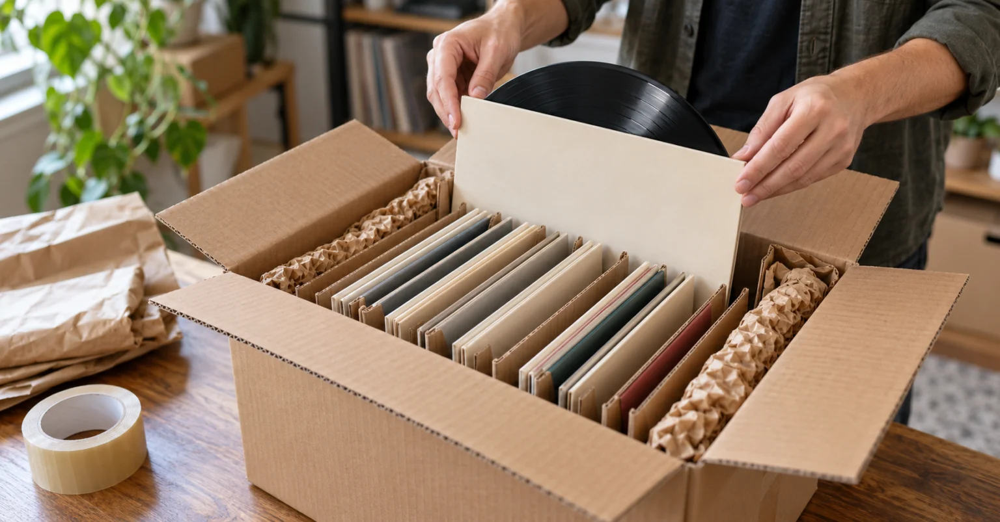
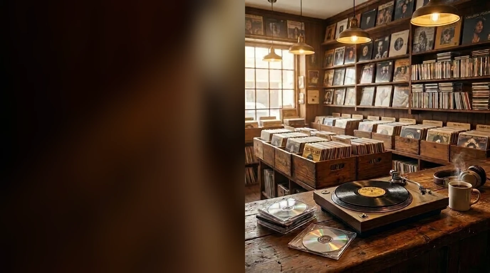
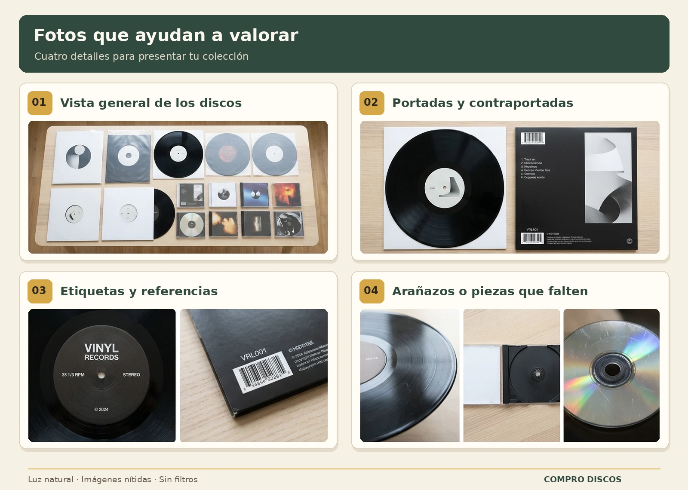

Discos de vinilo
LP, sencillos y EP. Fotografía las portadas y etiquetas.

Contacta conmigo para acordar una valoración. Me desplazo por la región de Lisboa, incluidos Cascais, Parede, Carcavelos y Oeiras. Otros lugares a convenir.

Me interesan los vinilos y CD de todos los géneros musicales. Tras comprobar su estado y llegar a un acuerdo, la compra y el pago pueden realizarse en el momento.
Compro vinilos y CD para mi colección personal
Tus discos.Nuevas historias.La misma pasión.
Compro vinilos y CD exclusivamente para mi colección personal. Envía fotografías y cuéntame qué tienes guardado.

Compro Discosde Vinilo y CD
Coleccionista particular · Valoración justa y rápida

Soy Paulo Morais, coleccionista de vinilos y CD desde hace más de 30 años. Disfruto eligiendo un álbum, descubriendo una portada y volviendo a escuchar una canción que dejó huella.
Conoce mi historia ↗LP, sencillos y EP. Fotografía las portadas y etiquetas.
Indica artistas, títulos y estado de cajas y libretos.
Envía una vista general y la cantidad aproximada.
Coleccionista particular · Paulo Morais


Sencillo, directo y personal
Envía fotografías, cantidad y localidad.
Si me interesan, hablamos de una posible oferta.
Acordamos precio, pago y entrega antes del envío.
No para empezar. Envía una vista general y portadas legibles.
Sí. Puedes presentar vinilos, CD o ambos, indicando títulos y estado.
Sí. El formulario admite hasta cinco imágenes JPG, PNG o WebP, con 10 MB en total. En WhatsApp se añaden en la conversación.
¿Tienes vinilos o CD que ya no escuchas? Soy Paulo Morais y compro discos para mi colección personal. Indica qué quieres vender, la cantidad aproximada, su estado y la localidad.
Puedes contactar desde Cascais, Parede, Carcavelos, Oeiras u otra localidad de Gran Lisboa. El desplazamiento y las condiciones de compra se acuerdan directamente tras una primera valoración. No es una tienda abierta al público.
Coleccionista particular · Paulo Morais
Elige correo electrónico o WhatsApp. La consulta no obliga a vender ni garantiza una compra.